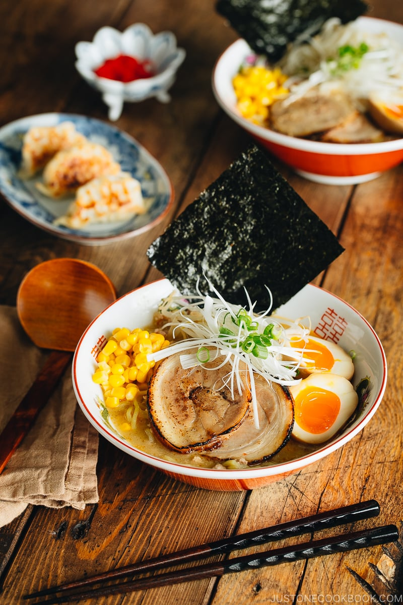

Japanese Miso Ramen
Return to Home

Description
(Description shamelessly copy-pasta'd in modified format from
Wikipedia.)
Ramen (拉麺, ラーメン or らーめん) is a Japanese noodle dish.
It consists of Chinese-style wheat noodles (中華麺,
chūkamen) served in a broth; common flavors are soy sauce
and miso, with typical toppings including sliced pork
(chāshū), nori (dried seaweed), menma (bamboo shoots),
and scallions. Ramen has its roots in Chinese noodle
dishes and is a part of Japanese Chinese cuisine.
Nearly every region in Japan has its own variation of
ramen, such as the tonkotsu (pork bone broth) ramen of
Kyushu and the miso ramen of Hokkaido.
Ingredients
For the Soup Broth
- 2 cloves garlic
- ½ tsp ginger
- 1 shallot
- 1 Tbsp toasted white sesame seeds
- 1 Tbsp toasted sesame oil
- ¼ lb ground pork (use meat alternatives or
chopped mushrooms for vegan/vegetarian)
- 1 tsp doubanjiang (spicy chili bean paste) (use
the spicy or non-spicy type or gluten-free
doubanjiang)
- 3 Tbsp miso (most types will work except Saikyo and
Hatcho varieties; each type will create a slightly
different broth flavor)
- 1 Tbsp sugar
- 1 Tbsp sake
- 4 cups chicken stock/broth (use vegetable stock
for vegan/vegetarian)
- 1 tsp Diamond Crystal kosher salt (to taste)
- ¼ tsp white pepper powder
For the Ramen Noodles
- 2 servings fresh ramen noodles (10-12 oz [283-340
g] fresh noodles or 6.3 oz [180 g] dry ramen
noodles; for gluten-free, use GF ramen noodles)
For the Toppings (Personal Preference)
- Homemade Chashu (Japanese Braised Pork Belly)
(skip for vegan/vegetarian)
- Spicy Bean Sprout Salad (or blanched bean sprouts)
- Ramen Egg (Ajitsuke Tamago) (slice in half
lengthwise to serve)
- frozen or canned corn (drained)
- nori (dried laver seaweed) (cut a sheet into
quarters)
- green onion/scallion (chopped)
- Shiraga Negi (julienned long green onions)
For the Condiments (Personal Preference)
- la-yu (Japanese chili oil)
- pickled red ginger (beni shoga or kizami beni
shoga)
- white pepper powder
Steps
(Steps shamelessly plagiarized from
Just One Cookbook
, since this is an HTML course, not an original
content course.)
Pre-Prep
- Prepare the ramen toppings ahead of time—a day in
advance for the Homemade Chashu (Japanese Braised
Pork Belly) and Ramen Egg (Ajitsuke Tamago)—so they're
ready to serve with your piping-hot bowl of ramen.
- For toppings, set aside chashu, ramen egg, blanched bean
sprouts (or Spicy Bean Sprout Salad), frozen or
canned corn, Shiraga Negi (julienned long green
onions), chopped green onion/scallion, and a sheet of
nori (dried laver seaweed). For the optional
condiments, prepare a bottle of la-yu (Japanese chili
oil), pickled red ginger (beni shoga or kizami beni
shoga), and some white pepper powder on the table.
Prepare the Ingredients
- Gather all the ingredients.
- Mince or press 2 cloves garlic and add to a small
plate. Then, grate the ginger and add ½ tsp
ginger (grated) to the plate.
- Mince 1 shallot and add to the plate and set
these three prepared ingredients aside.
- Grind 1 Tbsp toasted white sesame seeds, leaving
some seeds unground for texture. Set aside.
Make the Soup Broth
- Preheat a medium pot over medium-low heat. When it's
hot, add 1 Tbsp toasted sesame oil. Then, add the
garlic, ginger, and shallot.
- With a wooden spatula, stir-fry until fragrant.
- Add ¼ lb ground pork and increase the heat to medium.
Cook the meat until it's no longer pink.
- Add 1 tsp doubanjiang (spicy chili bean paste) and
3 Tbsp miso. Quickly blend well with the meat before
they get burnt.
- Add the ground sesame seeds and 1 Tbsp sugar and mix well.
- Add 1 Tbsp sake and 4 cups chicken stock/broth and
bring the mixture to a simmer.
- Taste your soup and add up to 1 tsp Diamond Crystal
kosher salt (if necessary) and ¼ tsp white pepper
powder.
- Your soup broth is now done. Cover with the lid and
keep the soup broth simmering while you cook the
noodles.
Prepare the Ramen Noodles
- Bring a large pot of unsalted water to a boil (ramen
noodles already include salt in the dough). When the
water is boiling, ladle some of the hot water
into the individual ramen bowls to warm them up.
Meanwhile, gently shake 2 servings fresh ramen
noodles with your hand to separate and loosen
them up.
- Cook the noodles according to the package
instructions. I usually cook the noodles al dente
(about 15 seconds less than the suggested cooking
time). Before your noodles are done cooking, empty
the hot water from the warmed ramen bowls.
- When the noodles are done, quickly pick them up with
a mesh sieve and shake out the excess water. Make
sure to drain the water well, as you don't want it to
dilute your soup. Serve the noodles into the warmed
bowls.
Serve
- Add the piping-hot ramen soup broth to each bowl.
- Place the toppings of your choice on the ramen
noodles and serve immediately. Add the optional
condiments to your Miso Ramen and enjoy.
Created as part of
The Odin Project.
This project meets requirements for the assignment
Foundations Project: Recipes and has not been
wastefully or uselessly enhanced, except where noted for
practice purposes.